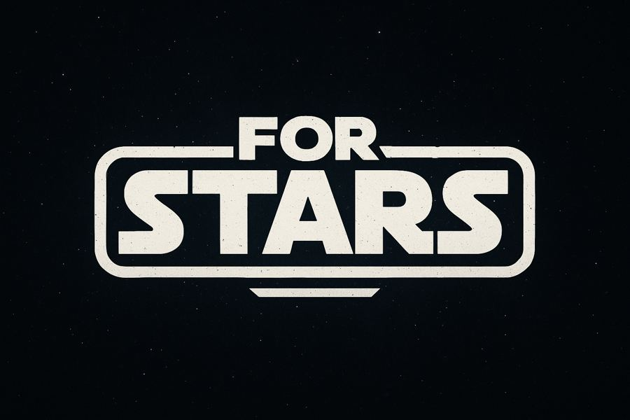

For Stars est un jeu de stratégie pensé pour des affrontements à très grande échelle, avec des configurations de bataille allant jusqu'à 128 contre 128.
Le projet explore comment donner de l'ampleur à des combats de masse tout en gardant une lecture claire du champ de bataille.